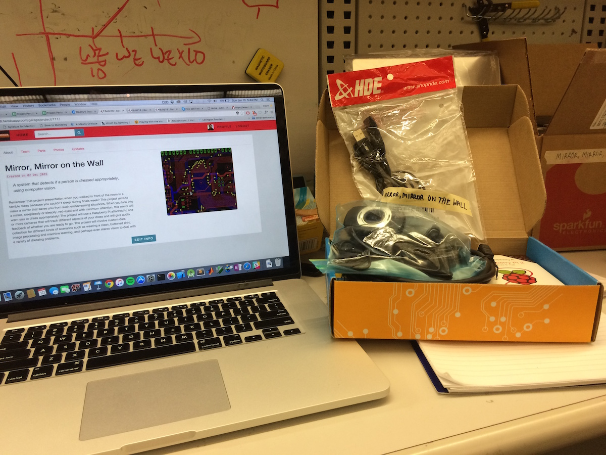

Day 1: Jan 10, 2016
First day as Build18 officer during Build Week, 2016! With project parts all set and ready for students to start hacking, I started working on my project plan. My project relies on computer vision techniques so I got a good webcam by Logitech. I also got a Raspberry Pi 2 (jumps up and down) and started setting it up write away.
Here is a picture of the stuff I got: 
I was able to install and setup my Raspberry Pi 2 with Raspbian and get Wi-Fi working (can't use ethernet in the ECE labs in Hamerschalg Hall). All set for installing OpenCV 3.0 tomorrow!
Schedule
Monday, Jan 11 - Setup and Install OpenCV 3.0 on the RPi. Work on a basic face detector/recognizer. Tuesday, Jan 12 - Select at least 3 interesting aspects of a person's dress to detect/track and implement those. Wednesday, Jan 13 - Continue working on the aspects decided on Tuesday, change if necessary, add if time permits. Thursday, Jan 14 - Clean up and setup for demo, make some videos, try to add a few bells and whistles! Friday, Jan 15 - Demo day :)
Proposal
Remember that project presentation when you walked in front of the room in a terrible mess because you couldn't sleep during finals week? This project aims to make a mirror that saves you from such embarrassing situations. When you look into a mirror, sleeplessly or sleepily, red-eyed and with minimum attention, this mirror will warn you to dress appropriately! The project will use a Raspberry Pi attached to one or more cameras that will track different aspects of your dress and will give audio feedback of whether you are ready to go. The project will involve custom data collection for different kinds of scenarios such as wearing a clean, buttoned shirt, image processing and machine learning, and perhaps even stereo vision to deal with a variety of dressing problems.